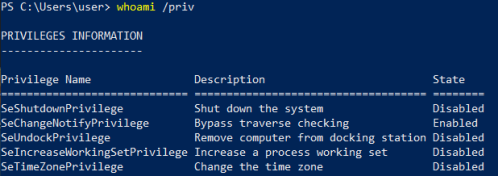

10. User Privileges
WARNING: NOT
TESTED• In Windows, user accounts and groups can be assigned specific “privileges”.
•
These privileges grant access to certain abilities.
• Some of these abilities can be used to escalate our
overall privileges to that of SYSTEM.
1.
Check user privileges“disabled” in
the state column is irrelevant. If the privilege is listed, the user has it.
2. Abuse the
following privileges
•
SeImpersonatePrivilege grants the ability to impersonate any
access tokens which it can obtain.
If an access token from a SYSTEM process can be obtained, then a new
process can be spawned using that token.
We can abuse this privilege with:
◇
Juicy
Potato ◇
RogueWinRM (needs winrm
disabled)
◇
SweetPotato ◇
PrintSpoofer•
SeAssignPrimaryPrivilege similar to SeImpersonatePrivilege.
It enables a user to assign
an access token to a new process.
We can abuse this privilege with:
◇
Juicy
Potato •
SeBackupPrivilege grants read access to all objects on the system,
regardless of their ACL.
Using this privilege, a user could gain access to sensitive files, or extract hashes
from the registry which could then be cracked or used in a pass-the-hash attack.
We can abuse this privilege
with:
◇
https://github.com/Hackplayers/PsCabesha-tools/blob/master/Privesc/Acl-FullControl.ps1
◇
https://github.com/giuliano108/SeBackupPrivilege/tree/master/SeBackupPrivilegeCmdLets/bin/Debug
◇ IppSec:
https://www.youtube.com/watch?v=IfCysW0Od8w&t=2610&ab_channel=IppSec•
SeRestorePrivilege grants write access control to all objects on the system, regardless of
their ACL.
We can abuse this privilege with:
◇
Modify
service binaries ◇
Overwrite
DLLs used by SYSTEM processes (DLL Hijacking) ◇
Modify
registry settings•
SeTakeOwnershipPrivilege This privilege is very similar to
SeRestorePrivilege.
lets the user take ownership over an object (the WRITE_OWNER permission).
We can
abuse this privilege with:
◇ First, you have to take ownership of the registry key that you are going to write
on and modify the DACL so you can write on it.
Then the same methods used with SeRestorePrivilege can be
applied.
•
SeTcbPrivilege•
SeCreateTokenPrivilege•
SeLoadDriverPrivilege•
SeDebugPrivilege (used by
getsystem
and
psgetsys.ps1)
Bibliography:
•
https://book.hacktricks.xyz/windows/windows-local-privilege-escalation/privilege-escalation-abusing-tokens•
https://github.com/hatRiot/token-priv (
abusing_token_eop_1.0.txt)